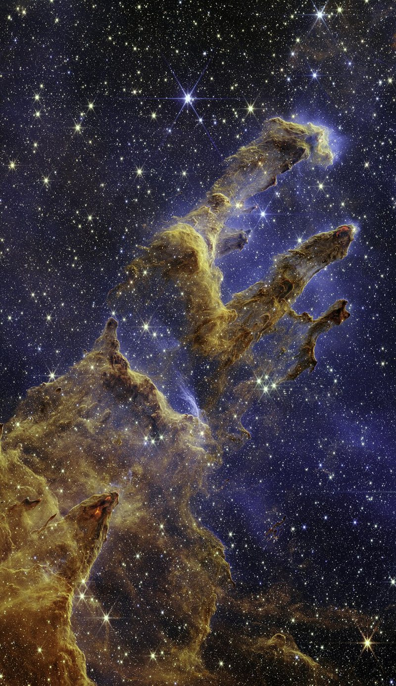

Cómo una nube de gas colapsa y forma estrellas
Una estrella empieza como algo muy distinto a una estrella: una nube fría de gas, enorme y tenue. Esa nube sostiene un duelo: su propia gravedad la quiere comprimir y su presión la quiere expandir. El criterio para saber quién gana lo dio James Jeans, y es uno de los resultados más lindos de la física de fluidos astrofísica.
Una nube colapsa si la presión del gas no alcanza a sostener la gravedad [1]. M. Celoria y sus colegas dan la forma más simple de plantearlo, con el teorema del virial: en equilibrio, la energía potencial gravitatoria U debe valer el doble de la energía térmica K, con signo opuesto. La nube colapsa si [1]:
Para una esfera de densidad uniforme, de masa M y radio R, la energía gravitatoria es U = −(3/5) GM²/R, y la térmica, K = (3/2) N kB T, con N la cantidad de partículas [1]. Si se combinan esas dos expresiones, la condición dice que hay colapso si la masa supera un valor crítico (un cálculo propio a partir de esas fórmulas):
El factor numérico depende de cómo se define la masa de Jeans: distintos autores usan convenciones diferentes. Lo importante es cómo escala: MJ crece con T3/2 y baja con ρ−1/2. El frío y la densidad favorecen el colapso.
Un globo y su peso: pensá en la presión como aire que empuja hacia afuera y en la gravedad como una goma que aprieta. La goma se vuelve más fuerte cuanta más masa hay en juego. Con poca masa, gana el aire; a partir de cierta masa, gana la goma, y todo se hunde.
Tomemos una nube molecular fría, con valores de ejemplo: T = 10 K, una densidad de 10⁴ moléculas por centímetro cúbico y μ = 2,3. Da MJ ≈ 1 × 10³¹ kilogramos, unas 5 masas solares, en una región de unos 0,1 pársec de radio (cálculos propios). Si la misma nube se comprimiera hasta tener cuatro veces más densidad, sin calentarse, la masa de Jeans se reduciría a la mitad. Por eso, una nube que colapsa puede fragmentarse en pedazos más chicos: cada trozo vuelve a superar el umbral.
Una imagen famosa muestra el proceso. Los Pilares de la Creación son columnas de gas y polvo interestelar frío, fotografiadas por el Hubble en 1995 y por el telescopio James Webb en 2022 [2]. Cuando grumos con suficiente masa se forman dentro de esas columnas, comienzan a colapsar por su propia gravedad, se calientan de a poco y terminan formando estrellas nuevas [2]. Webb ayuda a contar con más precisión las estrellas recién nacidas y las cantidades de gas y polvo, y con eso mejorar los modelos de formación estelar [2].

Un criterio simple para un problema complejo: el cálculo de Jeans es una idealización. Una nube real tiene rotación, campos magnéticos, turbulencia y formas irregulares, y las estrellas ya formadas la perturban con sus chorros [2]. Aun así, su forma de pensar sigue siendo el punto de partida, y la misma lógica vale en una escala mucho mayor para la formación de galaxias (un comentario propio).
Una nube colapsa cuando su gravedad supera a su presión. La masa de Jeans marca ese umbral: es menor si la nube es fría y densa. Durante el colapso, la nube puede partirse en pedazos que forman estrellas. Con solo el teorema del virial y la energía de un gas, se obtiene el orden de magnitud correcto de una estrella.
Pregunta para la comunidad: Si un gas se calienta al comprimirse, la masa de Jeans vuelve a subir. ¿En qué momento deja de fragmentarse una nube que colapsa? ¿Qué papel juega que pueda enfriarse emitiendo radiación?